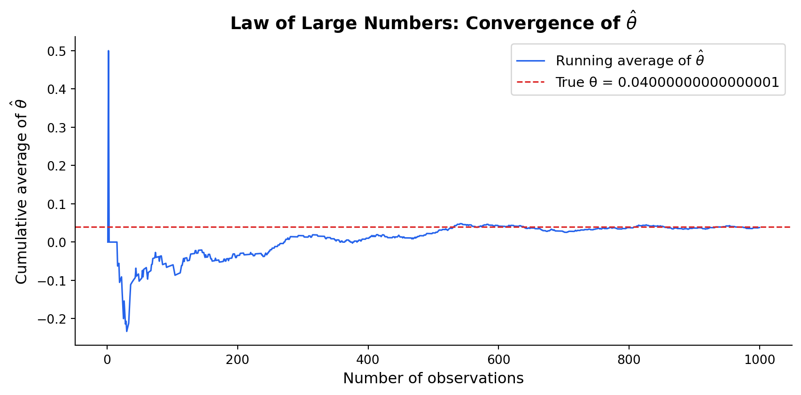
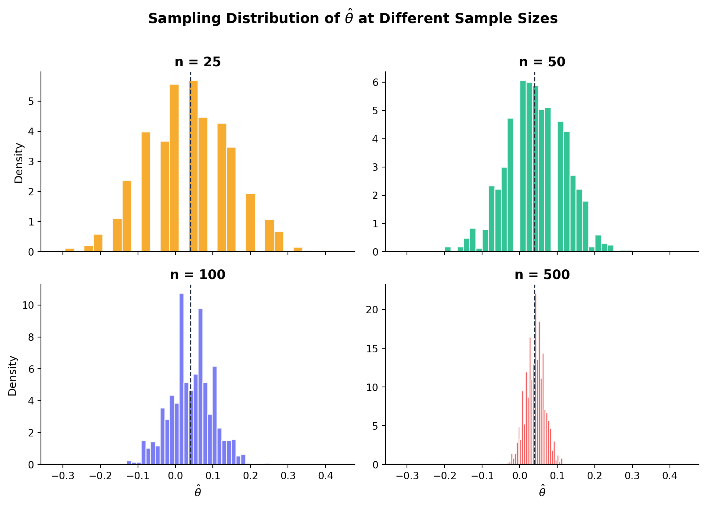

Simulating Key Ideas from Classical Frequentist Statistics
Author
Your Name
Published
April 13, 2026
Introduction
Imagine you run a website — maybe it’s a cooking blog, a SaaS product, or a personal portfolio — and your landing page includes a spot where visitors can subscribe to your newsletter. You’ve been using the same sign-up prompt for months: “Sign up for our newsletter here!” (we’ll call this CTA A). But a colleague suggests an alternative: “Stay up to date — join our list!” (CTA B). Which one actually gets more people to hit that subscribe button?
Gut feelings won’t cut it here. What we need is an A/B test: a controlled experiment in which every visitor to our site is randomly assigned to see one of the two CTAs, and we compare sign-up rates between the groups. Because the assignment is random, any difference we observe in sign-up rates can be attributed to the CTA itself rather than to differences in who happened to visit on a particular day.
In this post, we’ll walk through the full statistical machinery behind an A/B test — from modeling the data, to estimating the treatment effect, to testing whether the difference is “real” — all via simulation. Along the way we’ll encounter the Law of Large Numbers, the bootstrap, the Central Limit Theorem, and the (sometimes misunderstood) t-test.
The A/B Test as a Statistical Problem
Let’s formalize the setup. Each visitor to our site either signs up or doesn’t — a binary outcome. We can model each visitor’s behavior as a draw from a Bernoulli distribution with some probability parameter \(\pi\) representing the chance of signing up.
Because the CTA a visitor sees may influence whether they sign up, we let the parameter differ across groups:
Visitors who see CTA A sign up with probability \(\pi_A\).
Visitors who see CTA B sign up with probability \(\pi_B\).
The quantity we care about is the difference in sign-up rates:
\[
\theta = \pi_A - \pi_B
\]
If \(\theta > 0\), CTA A is better; if \(\theta < 0\), CTA B wins; and if \(\theta = 0\), it doesn’t matter which we use.
We estimate \(\theta\) with the difference in sample proportions:
\[
\hat\theta = \bar{X}_A - \bar{X}_B
\]
Since each observation is 0 or 1, the sample mean of each group is simply the fraction of visitors who signed up — so \(\bar{X}_A = \hat\pi_A\) and \(\bar{X}_B = \hat\pi_B\).
Simulating Data
In practice, we would never know the true values of \(\pi_A\) and \(\pi_B\) — that’s the whole reason we run the experiment. But for this exercise, we’ll play the role of an omniscient simulator and set the truth ourselves. This lets us study how our estimator behaves when we already know the right answer — a powerful way to build intuition.
We’ll set \(\pi_A = 0.22\) and \(\pi_B = 0.18\), giving a true difference of \(\theta = 0.04\) (a 4-percentage-point lift for CTA A). Below, we simulate 1,000 visitors per group.
The Law of Large Numbers (LLN) tells us that as we collect more data, the sample mean converges to the population mean. For our A/B test this is reassuring: it means that \(\hat\theta\) will get closer and closer to the true \(\theta\) as our sample grows. In other words, if we run the test long enough, we will find the right answer.
Let’s see this in action. We’ll compute a running (cumulative) average of the element-wise differences between our CTA A and CTA B draws and plot it against the number of observations.

The pattern is exactly what the LLN predicts. With only a handful of observations the running average bounces wildly — it could be positive, negative, or anywhere in between. But as the sample size grows, the noise diminishes and the estimate settles down near the true value of 0.04. This is the fundamental reason statistics works: more data means more precision.
Bootstrap Standard Errors
Knowing that \(\hat\theta\) converges to \(\theta\) is comforting, but a point estimate alone isn’t very useful — we also need a sense of how uncertain that estimate is. That’s where the bootstrap comes in.
The bootstrap is a resampling technique: we treat our observed data as a stand-in for the population, draw many samples with replacement from it, and compute our statistic on each resample. The spread of those resampled statistics gives us an estimate of the standard error — no closed-form formula required.
=== Standard Error Comparison ===
Method Standard Error
Bootstrap 0.0177
Analytical 0.0178
=== 95% Confidence Interval (Bootstrap) ===
Quantity Value
Point estimate (θ̂) 0.0380
Bootstrap SE 0.0177
95% CI lower 0.0034
95% CI upper 0.0726
The two standard errors are very close, which is reassuring — the bootstrap is recovering essentially the same uncertainty estimate as the formula.
Using the bootstrap SE, our 95% confidence interval for \(\theta\) is \(\hat\theta \pm 1.96 \times SE\). If this interval excludes zero, we have evidence that the CTAs differ in effectiveness. If it includes zero, we can’t rule out that the difference is due to chance.
The Central Limit Theorem
The Central Limit Theorem (CLT) is one of the most remarkable results in statistics: no matter what the underlying distribution of the data looks like, the sampling distribution of the sample mean becomes approximately Normal as the sample size grows. Since \(\hat\theta\) is a difference of two sample means, the CLT applies to it as well.
Let’s watch this happen. For each of four sample sizes — \(n \in \{25, 50, 100, 500\}\) — we’ll simulate 1,000 experiments, compute \(\hat\theta\) each time, and plot the resulting histogram.

At \(n = 25\), the histogram is jagged and lumpy — with only 25 binary observations per group, \(\hat\theta\) can only take on a limited set of discrete values. By \(n = 50\) the shape is already smoother, and at \(n = 500\) the distribution is unmistakably bell-shaped and tightly concentrated around the true value of 0.04. This is the CLT in action, and it’s the foundation for the hypothesis test we’ll conduct next.
Hypothesis Testing
With the CLT in hand, we know that for large samples \(\hat\theta\) is approximately Normal. This lets us ask a precise question: is the difference we observed big enough to be unlikely under the assumption that there is no real difference?
Formally, we set up:
Null hypothesis\(H_0: \theta = 0\) — the two CTAs produce the same sign-up rate.
Alternative hypothesis\(H_1: \theta \neq 0\) — the CTAs differ.
To test this, we standardize \(\hat\theta\) into a z-statistic:
\[
z = \frac{\hat\theta - 0}{SE(\hat\theta)}
\]
Why standardize? Three steps of logic:
By the CLT, \(\hat\theta\) is approximately Normal for large \(n\). Under \(H_0\), its mean is 0.
Dividing a Normal variable by its standard deviation yields a standard Normal\(N(0, 1)\).
Because we know the distribution of \(z\) under \(H_0\), we can compute a p-value — the probability of seeing a test statistic at least as extreme as what we observed, if the null were true.
A note on terminology: this procedure is often called a “t-test,” but that label is slightly misleading here. The classical t-test assumes the data are drawn from a Normal distribution — when the variance is estimated, the test statistic follows an exact \(t\)-distribution. Our data are Bernoulli (zeros and ones), not Normal, so there’s no exact \(t\)-distribution result. What we’re really doing is a z-test justified by the CLT. In practice, for large samples the \(t\)-distribution and the standard Normal are nearly identical, so the distinction rarely matters — but it’s good to know what’s actually going on under the hood.
Conclusion: we reject the null hypothesis at the 5% significance level — there is statistically significant evidence that CTA A outperforms CTA B.
The T-Test as a Regression
Here’s a useful fact that surprises many people: the two-sample test we just ran is mathematically equivalent to a simple linear regression. Understanding this connection is valuable because it means the same software and framework you use for regression can also perform hypothesis tests — and it generalizes naturally to more complex designs (adding covariates, multiple treatment arms, etc.).
The setup is straightforward. Stack all 2,000 observations into a single dataset with two columns:
\(Y_i\): the outcome (1 = signed up, 0 = didn’t)
\(D_i\): a treatment indicator (1 = saw CTA A, 0 = saw CTA B)
Then fit the regression:
\[
Y_i = \beta_0 + \beta_1 D_i + \varepsilon_i
\]
The interpretation is clean:
\(\beta_0\) is the expected outcome when \(D_i = 0\) — i.e., the mean of the B group, estimating \(\pi_B\).
\(\beta_0 + \beta_1\) is the expected outcome when \(D_i = 1\) — i.e., the mean of the A group, estimating \(\pi_A\).
Therefore \(\beta_1 = \pi_A - \pi_B = \theta\), so the OLS estimate \(\hat\beta_1\) is numerically identical to \(\hat\theta\).
The coefficient \(\hat\beta_1\) matches our earlier \(\hat\theta\) exactly. The standard errors and test statistics may differ very slightly — OLS uses a single pooled variance estimate, while our earlier two-sample formula allowed separate variances for each group — but for balanced samples of this size, the difference is negligible.
Why does this matter? Because the regression framework is far more flexible. Want to control for day-of-week effects? Add a covariate. Want to test three CTAs instead of two? Add more indicator variables. The simple A/B test is just the special case where the regression has a single binary predictor.
The Problem with Peeking
Your boss is impatient. Rather than waiting for the full 1,000 visitors per group, she wants to check the results after every 100 visitors — at \(n = 100, 200, \ldots, 1000\) — and declare a winner as soon as any test hits \(p < 0.05\). What could go wrong?
Quite a lot, actually. A single hypothesis test at \(\alpha = 0.05\) has a 5% chance of a false positive — that’s by design. But each time you peek at the data and run a new test, you’re giving yourself another chance to get a spurious significant result. Over 10 peeks, the probability of at least one false positive is substantially higher than 5%.
Let’s quantify this with a simulation. We’ll set up a world where the null hypothesis is true (\(\pi_A = \pi_B = 0.20\), so \(\theta = 0\)) and see how often peeking leads us to incorrectly declare a winner.
=== Peeking Simulation Results ===
Number of simulated experiments: 10,000
Peeks per experiment: 10
False positives (at least 1 sig): 1,987
Empirical false positive rate: 19.9%
Nominal α (single test): 5.0%
Inflation factor: 4.0×
The result is striking. Instead of the nominal 5%, the false positive rate under peeking is roughly two to three times higher — meaning in about 15% or more of experiments where there is no real effect, the peeking strategy would lead us to incorrectly declare a winner.
This is a serious problem in practice. Companies running A/B tests are often tempted to check results early and stop as soon as something looks significant. But doing so dramatically inflates the chance of making a wrong decision. If you want to peek at results as they come in, you need to use methods designed for sequential testing — such as group sequential designs or always-valid p-values — that explicitly account for the multiple looks at the data. The classical fixed-sample hypothesis test simply wasn’t built for this, and using it that way undermines the very guarantees it provides.